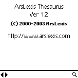

| |
Products | Downloads | Buy | Documentation | News | Support |
|
ArsLexis Thesaurus 1.2 comes in a thes.zip file that contains:
|  Upon startup Thesaurus displays by default About screen. This behavior can be changed via Startup action preference. |
Starting to type a word or pressing the spyglass icon brings the screen with list of words. The list will automatically scroll to the nearest word matching entered text. List can also be navigated in following ways:
Pressing Cancel button returns to main screen. |
|
Tapping on a word or pressing "return" (in Graffiti it's a move from upper
right to lower left) brings word definition screen. If a definition doesn't
fit on one screen you can scroll it using hardware up/down buttons, by tapping
on the screen (tapping on the upper part scrolls up, on the lower part scrolls
down) or by using scrollbars. You can either scroll by line, half a page or
the whole page (depending on preferences).
You can also scroll using up/down buttons of Treo's or Tungsten's 5-Way
Navigator You can move to next/previous word by using left/right arrows. |
| A history of recently looked up words is available by using pop-up list located next to a spyglass icon. |
Some functions can be invoked via Thesaurus menu:
|
Startup action preference defines what happens when Thesaurus start:
|
When more than one database is installed, Startup database preference defines which database
should be selected at startup:
|
Up/Down buttons and Tap preferences define
how a word definition should be scrolled when using up/down hardware buttons
or tapping on the screen:
|
|
Thesaurus can read databases in both internal memory and external memory such
as SD/MMC card or Memory Stick. Thesaurus will scan all
files on external memory card looking for databases.
If there are a lot of files on the card, this process takes a lot of time
so it's only being done once, when program is being run for the first time.
If you install the database after that, you need explicitly tell Thesaurus
to find databases on external memory card. To do that select menu "Main\Select
database". You'll see the following screen. Pressing "Find database" will
re-scan files on external memory card to find a database. In order to use
a given database, tap on the name to highlight it and press "Select" button.
Pressing "Cancel" will return to the main screen without making any changes. |
| If upon startup Thesaurus shows "Cannot find database. Please see manual for more information." error message it usually means that the database file thes.pdb has not been installed on the device. Please verify that the file is present either in internal memory or on external memory card such as SD/MMC card or Memory Stick. |